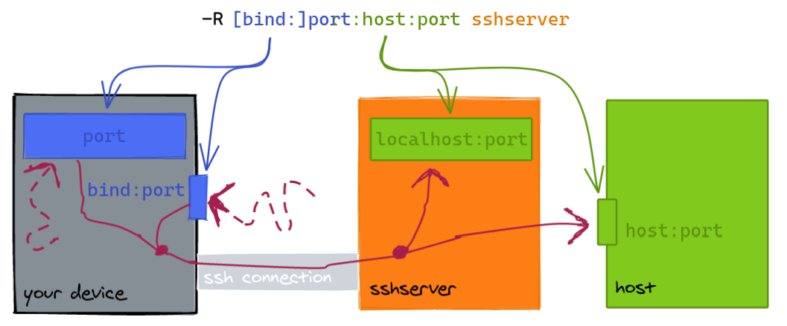
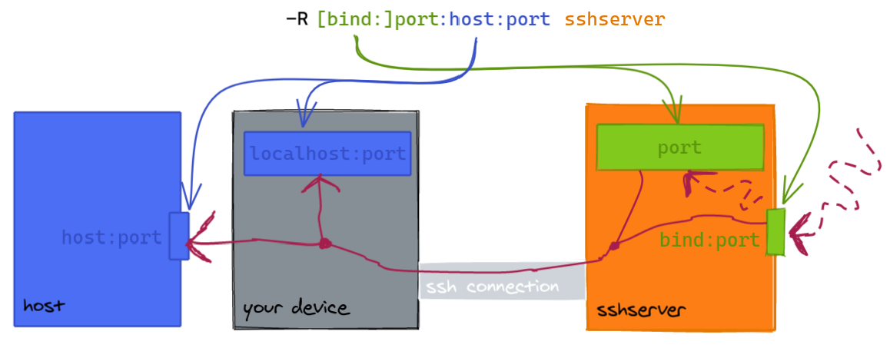

SSH
Escape sequences
<Enter> ~.- terminate connection (and any multiplexed sessions)<Enter> ~C- open command console<Enter> ~?- help message
Managing Keys
The full reference (Arch Wiki).
Common commands:
# Create new secure key with comment (User@Device#Realm)
ssh-keygen -t ed25519 -C Qasim@PC#QasimK
# Change passphrase of existing key
ssh-keygen -f ~/.ssh/id_ed25519 -p
# Add your credentials to remote server to allow you to login
ssh-copy-id -i ~/.ssh/id_ed25519.pub <host>
ssh-copy-id adds your SSH key to the remote user's authorized_keys file.
Port Forwarding (TCP-only)
Requests to a local port are sent to a remote host/port:
- The default
bindaddress islocalhost. hostcan belocalhostwhich meanssshserveror a remote host.

Requests to a remote port are sent to a "local" port:
- The default
bindaddress islocalhostonsshserver. (Changing this requiresGatewayPortsinsshd_config.) - The "local" port can be on your device or another
host.

To cancel port forwarding:
- In a multiplexed session, run
ssh -O cancel <port forward command> <host>. - Otherwise enter the control console and type
-KL <port forward command>(or-KRor-KD).
Autossh
autossh can restart an SSH command.
Recommendation: use -M0 with ServerAliveInterval and ServerAliveCountMax.
SSHD
Test config with sudo sshd -T before restarting the daemon.
The following settings are ordered starting from the most significant, least invasive and easiest to setup:
- Prevent root login
- Use SSH keys only
- Use a less common port, e.g. 24
- Only allow particular groups/users to login (such as
wheel, the administrative group)
PermitRootLogin no
PasswordAuthentication no
Port 23
AllowGroups wheel
AllowUsers qasim
- Rate-limit attempts:
sudo ufw limit OpenSSH(NB: check auto correct port?) - Use
ssh-geoip(blacklist IPs rather than whitelist to prevent lockout) (not tested; IPv6?) - Use an SSH bastion.
- Use fail2ban (not needed with SSH keys; lockout risk)
- Require 2FA:
libpam-google-authenticator(longer setup; not tested; has backup codes)
Mosh
- Mosh uses SSH for initial authentication.
- Requires UDP ports 60000–61000 to be open (you can get away with 60000-60010).